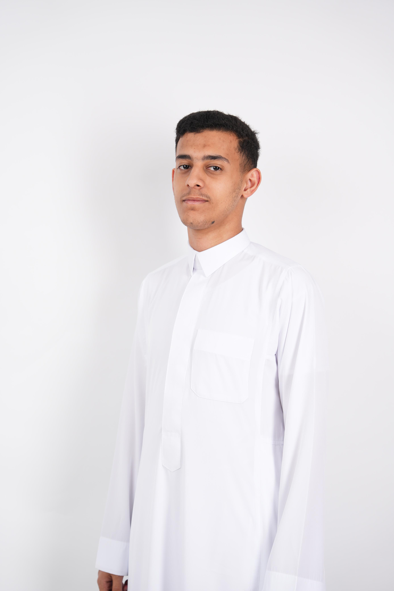

CVU — Computer Vision Project
A COE 301 project exploring computer vision concepts and practical implementation.
Hello, I'm
CS Student — AI/ML & Computer Vision
Computer Science student at KFUPM focused on Artificial Intelligence, Machine Learning, and Computer Vision. I enjoy building and experimenting with deep learning systems, with particular interests in computer vision, generative models, and modern AI architectures.

Selected projects in machine learning, computer vision, and artificial intelligence.
A COE 301 project exploring computer vision concepts and practical implementation.
Built machine learning models to classify near-Earth objects using orbital data. Compared multiple classification algorithms and evaluated their predictive performance.
Developed an image colorization model using Lab color space and a U-Net/autoencoder-style architecture to reconstruct color information from grayscale images.
Implemented a Transformer-based text classification model from scratch to better understand attention mechanisms, sequence processing, and the model's training pipeline.
Leadership, communications, and student activities at KFUPM.
Program Operations & Communications Coordinator
June 2026 — Present
Marketing Team
January 2025 — May 2026
Contributed to marketing campaigns, promotional content, communications, and event promotion for the club.
Marketing Team Member
January 2025
Supported event communications, photography, and promotional content during KFUPM Energy Week.
My academic background in computer science and artificial intelligence.
B.Sc. in Computer Science
2024 — 2028
Dhahran, Saudi Arabia
B.Sc. in Artificial Intelligence — Transferred
2023 — 2024
Medina, Saudi Arabia